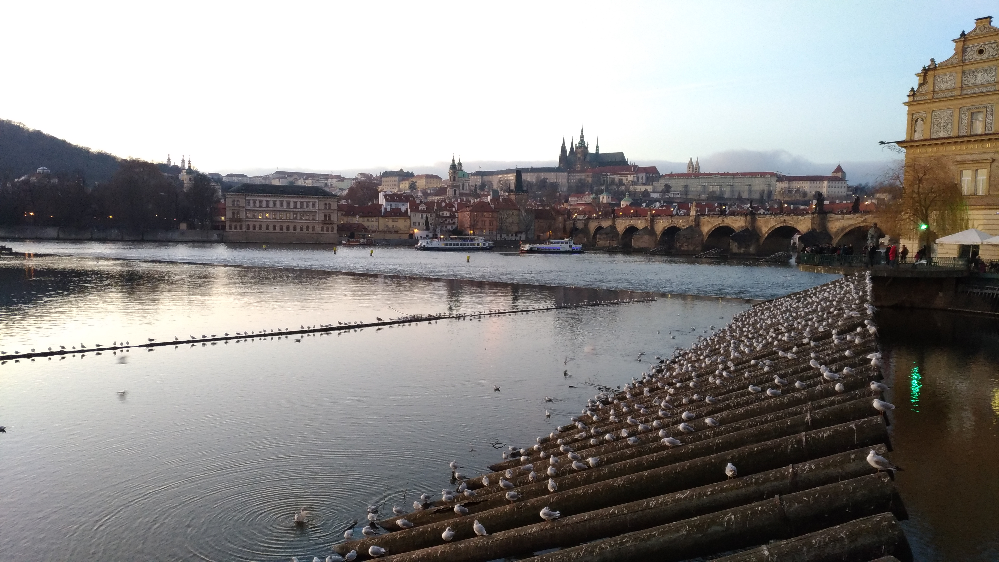
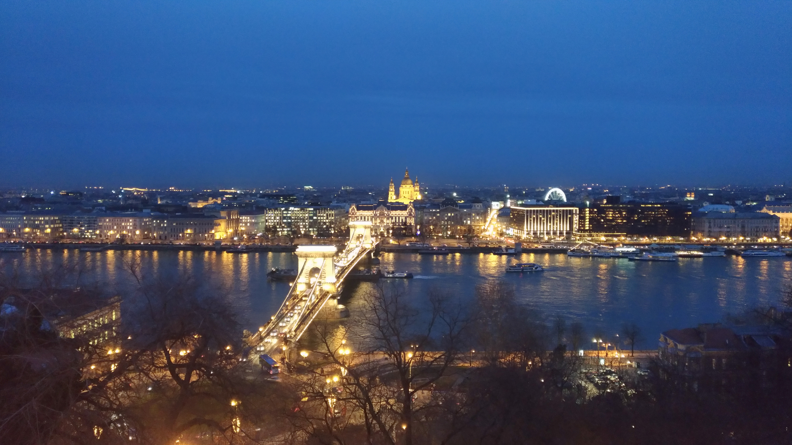
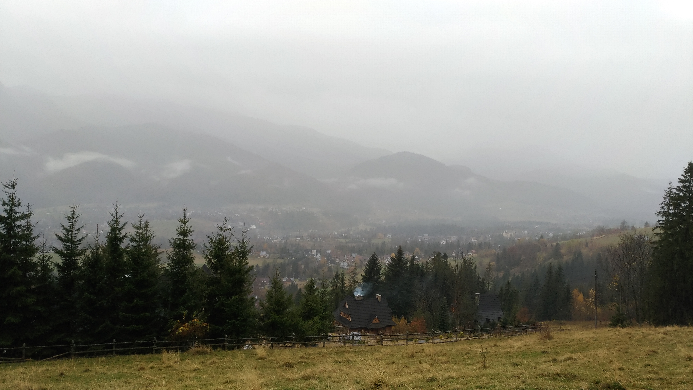

Yellowstone


Geographical Location: North America
Yellowstone is the first national park in the United States. It covers over 2.2 million acres, and provides an opportunity to see wildlife and explore geothermal areas. In fact, Yellowstone contains about half the world's active geysers.
These unique opportunities also bring out a lot of bad decisions among the tourists. Every year visitors injure themselves or the wildlife by getting close to the animals. You can see examples of people making bad decisions by visiting Yellowstone National Park: Invasion of the Idiots, Tourons of Yellowstone, or Cowboy State Daily.
Photo Gallery


Kraków

Geographical Location: Kraków
Kraków is the second-largest and one of the oldest cities in Poland. Situated on the Vistula River in Lesser Poland Voivodeship, the city dates back to the seventh century. Kraków was the official capital of Poland until 1596 and has traditionally been one of the leading centres of Polish academic, economic, cultural and artistic life.
Cited as one of Europe's most beautiful cities, its Old Town with Wawel Royal Castle was declared a UNESCO World Heritage Site in 1978, one of the world's first sites granted the status.
Photo Gallery
Prague
Geographical Location: Prague
Prague is the capital and largest city of the Czech Republic, and the historical capital of Bohemia. On the Vltava river, Prague is home to about 1.3 million people.
The city has a temperate oceanic climate, with relatively warm summers and chilly winters.
Photo Gallery

Budapest
Geographical Location: Budapest
Budapest is the capital and most populous city of Hungary. It is the ninth-largest city in the European Union by population within city limits and the largest city on the Danube river; the city has an estimated population of 1,752,286 over a land area of about 525 square kilometres (203 square miles).
Budapest is a global city with strengths in commerce, finance, media, art, fashion, research, technology, education, and entertainment.
Photo Gallery

Porto

Geographical Location: Porto
Porto is the second largest city in Portugal after Lisbon, the capital of the Porto District, and one of the Iberian Peninsula's major urban areas.
Porto city proper, which is the entire municipality of Porto, is small compared to its metropolitan area, with an estimated population of just 231,800 people in a municipality with only 41.42 km2 (16 sq mi).
Photo Gallery

Zakopane
Geographical Location: Zakopane
Zakopane is a town in the south of Poland, in the southern part of the Podhale region at the foot of the Tatra Mountains. As of 2017 its population was 27,266.
Zakopane is a centre of Goral culture and is often referred to as "the winter capital of Poland". It is a popular destination for mountaineering, skiing, and tourism.
Photo Gallery